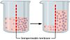

osmotic

Definition: Osmosis (, US also ) is the spontaneous net movement or diffusion of solvent molecules through a selectively-permeable membrane from a region of high water potential (region of lower solute concentration) to a region of low water potential (region of higher solute concentration), in the direction that tends to equalize the solute concentrations on the two sides. It may also be used to describe a physical process in which any solvent moves across a selectively permeable membrane (permeable to the solvent, but not the solute) separating two solutions of different concentrations. Osmosis can be made to do work. Osmotic pressure is defined as the external pressure required to be applied so that there is no net movement of solvent across the membrane. Osmotic pressure is a colligative property, meaning that the osmotic pressure depends on the molar concentration of the solute but not on its identity.
Source: Wikipedia
Wikipedia Page (Something wrong with this association? Let us know.)
Wikidata Page (Something wrong with this association? Let us know.)